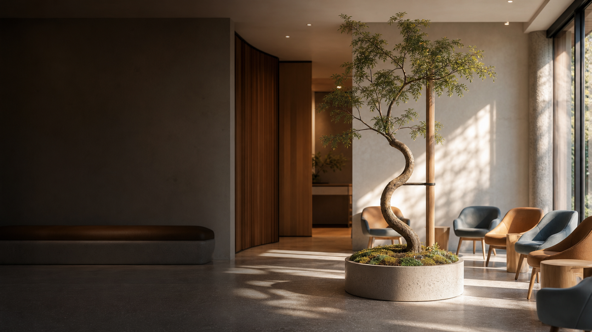

Voet, enkel en sportletsel
Focus op voet- en enkelklachten en sportgerelateerde letsels. Met aandacht voor duidelijke uitleg, realistische behandelkeuzes en herstel dat past bij iemands leven.

Orthopedisch chirurg en adviseur zorgontwikkeling
Matthijs van Dam is orthopedisch chirurg in het ETZ te Tilburg. Zijn aandachtsgebieden zijn voet- en enkelchirurgie, behandeling van artrose van de knie en leefstijlgerelateerde klachten, zoals gewrichtsklachten bij obesitas. Daarnaast doet hij onderzoek in samenwerking met onder andere het LUMC en Tilburg University, en werkt hij aan apps voor leerstrategieen bij orthopedisch chirurgen in opleiding en voor het stimuleren van 10.000 stappen bij artrosepatienten en ziekenhuismedewerkers.
Deze site is geen patientportaal en biedt geen medisch advies op maat.
Professioneel, persoonlijk en helder
Deze website is bedoeld als persoonlijke professionele plek voor profiel, expertise, projecten, publicaties en artikelen. Niet als patientportaal of kanaal voor medisch advies op maat, maar als rustige ingang voor wie meer wil weten over Matthijs' werk.
Expertise
Focus op voet- en enkelklachten en sportgerelateerde letsels. Met aandacht voor duidelijke uitleg, realistische behandelkeuzes en herstel dat past bij iemands leven.
Artrose van de knie, met extra aandacht voor leefstijl en obesitas. Niet als oordeel, maar als onderwerp dat zorgvuldige, begripvolle begeleiding verdient.
Onderzoek en zorgontwikkeling rond betere orthopedische zorg, met aandacht voor samenwerking, appontwikkeling, AI en praktische toepasbaarheid.
Voor patienten
Artikelen en updates kunnen helpen om algemene begrippen, keuzes en herstelthema's beter te begrijpen. Bij onderwerpen als obesitas en artrose staat begripvolle zorg centraal, zonder stigma of versimpeling. Voor persoonlijke medische vragen blijft de eigen behandelaar of het ETZ de juiste route.
Voor professionals
Voor collega's, zorgorganisaties en partners ligt de nadruk op kennisdeling, onderzoeksideeen, onderwijs en het praktisch verbeteren van orthopedische zorg.
Projecten
Meedenken over betere zorgprocessen, 3D-ontwikkeling, AI en implementatie in de praktijk.
Onderzoek en innovatie binnen orthopedie, met aandacht voor toepasbaarheid in de zorg.
Kennis delen via publicaties, presentaties, artikelen en professionele uitwisseling.
Ontwikkeling van manieren om leefstijl, belastbaarheid en herstel bespreekbaar en toepasbaar te maken binnen orthopedische zorgpaden.
Advisering rond zorgprocessen, samenwerking en praktische invoering van verbeteringen in de dagelijkse klinische praktijk.
Onderzoek en innovatie krijgen waarde wanneer ze begrijpelijk, toetsbaar en uitvoerbaar worden voor teams en patienten.
Over
Matthijs van Dam is orthopedisch chirurg met de aandachtsgebieden voet- en enkelchirurgie, sportletsels en kniechirurgie. Hij werkt bij het Orthopedisch Centrum ETZ in Tilburg, waar hij patienten behandelt met uiteenlopende orthopedische klachten: van standafwijkingen en artrose tot sportblessures en complexe voet- en enkelproblemen.
Werken in een groot topklinisch ziekenhuis betekent dat hij een breed spectrum aan aandoeningen ziet, van relatief overzichtelijke klachten tot complexe zorgvragen. Door de ziekenhuisbrede ondersteuning en de aanwezigheid van IC-achtervang kan ook zorg voor kwetsbare of medisch complexere patienten veilig worden georganiseerd.
In zijn werk combineert hij specialistische orthopedisch-chirurgische expertise met een brede blik op herstel, leefstijl en duurzame zorg. Hij vindt het belangrijk dat patienten goed begrijpen wat er aan de hand is, welke behandelmogelijkheden er zijn en wat zij zelf kunnen doen om hun herstel te ondersteunen. Samen beslissen, duidelijke uitleg en een behandelplan dat past bij de persoonlijke situatie van de patient staan daarbij centraal.
Naast zijn klinische werk zet Matthijs zich in voor innovatie, onderwijs en betere patientcommunicatie. Hij werkt onder andere aan duidelijke online informatie, digitale zorgpaden en scholing en opleiding voor arts-assistenten en andere zorgprofessionals. Ook onderzoekt hij hoe digitale toepassingen, zoals apps voor patienten en ziekenhuismedewerkers, en technieken zoals 3D-printing bij operaties kunnen bijdragen aan betere, efficientere en persoonlijkere zorg.
Matthijs is getrouwd met Jacobien; samen hebben zij vier kinderen. In zijn vrije tijd is hij graag met zijn gezin en probeert hij soms zelf ook nog wat te bewegen op en langs de sportvelden.
Voor afspraken, praktische ziekenhuisinformatie en officiele patientenzorg blijft het ETZ de juiste route. Bekijk daarvoor de profielpagina van Matthijs van Dam op etz.nl.
Bekijk ETZ-profielArtikelen
Artikelen krijgen doelgroep-labels. Daardoor kunnen ze later automatisch worden meegenomen in de juiste nieuwsbrief: voor patienten, voor zorgprofessionals of voor allebei.
Onderzoek - Beide nieuwsbrieven
Over de Leefstijlcoalitie-voucher om in het ETZ een digitaal zorgpad voor artrose en obesitas uit te rollen met partners in ziekenhuis en regio.
Lees artikelPublicatie - Zorgprofessionals
Professionele duiding van het NTvG-artikel over educatie, oefentherapie, leefstijl, netwerkzorg en digitale monitoring.
Lees artikelPublicatie - Patienten
Begrijpelijke uitleg over artrosezorg, bewegen, leefstijl en samenwerking tussen zorgverleners, zonder medisch advies op maat.
Lees artikelPublicaties
Een overzicht van wetenschappelijke publicaties en professionele bijdragen van Matthijs J.J. van Dam. De samenvattingen hieronder zijn bedoeld om de kern begrijpelijk te maken, zonder medisch advies op maat.
Van Dam M. Een prik of een preek? Medisch Contact. 1 mei 2025.
In deze praktijkbijdrage beschrijft Matthijs de spanning tussen wat patienten verwachten van orthopedische zorg en wat goede artrosezorg soms ook vraagt: een gesprek over leefstijl, gewicht, bewegen en haalbare ondersteuning.
De kern: leefstijlbegeleiding hoort niet als oordeel of preek te voelen, maar kan wel een vanzelfsprekend onderdeel zijn van een orthopedisch zorgpad wanneer obesitas en artrose elkaar versterken.
Lees bij Medisch ContactGosens T, van Dam MJJ, Korst J, Maas L, Aarnoudse G. Nederlands Tijdschrift voor Geneeskunde. 2026;170:D8889. PMID: 41810568.
Dit artikel beschrijft waarom artrosezorg meer vraagt dan alleen opereren wanneer klachten ernstig worden. Gestructureerde uitleg, oefentherapie, leefstijlondersteuning en regionale samenwerking kunnen helpen om mensen langer mobiel te houden en soms een operatie uit te stellen.
De praktische boodschap: artrosezorg moet beter georganiseerd worden rond de patient, met een duidelijke rol voor huisarts, fysiotherapeut, leefstijlbegeleiding en orthopedie.
Bekijk op PubMedvan Es LJM, van Dam MJJ, de Wit BWK, Aaftink JFA, Benner JL, Kerkhoffs GMMJ, Burger BJ, Tsuchida AI. Journal of Foot and Ankle Surgery. 2026. DOI: 10.1053/j.jfas.2025.10.013. PMID: 41223927.
Bij een totale enkelprothese wordt gekeken hoe de prothese ten opzichte van het scheenbeen wordt geplaatst. Deze studie onderzocht of het behouden van de natuurlijke hoek van het onderste scheenbeen invloed heeft op de overleving van de enkelprothese.
De kern: in deze groep werd geen duidelijk negatief effect gevonden van het behouden van de natuurlijke stand op de overleving van de prothese. Dat helpt bij het nadenken over maatwerk in enkelprothesechirurgie.
Bekijk op PubMedvan Duijvenbode DC, van Dam MJJ, de Beer L, Stavenuiter MHJ, Hofstee DJ, van Dijke CF, Sjer AEB, Steen MW. The Knee. 2021. DOI: 10.1016/j.knee.2021.07.009. PMID: 34416526.
De positie van de knieschijf kan een rol spelen bij pijn aan de voorkant van de knie. Deze studie onderzocht hoe betrouwbaar de patellotrochlear index op MRI is om de hoogte van de knieschijf te meten.
De kern: de meting bleek goed tot uitstekend reproduceerbaar tussen en binnen beoordelaars. Daarmee kan deze MRI-maat helpen om knieschijfproblemen consistenter te beoordelen.
Bekijk op PubMedHagemans FJA, Jonkers FJ, van Dam MJJ, von Gerhardt AL, van der List JP. American Journal of Sports Medicine. 2020. DOI: 10.1177/0363546520951796. PMID: 32941081.
Deze studie keek naar patienten die in de jaren negentig een voorste-kruisbandreconstructie kregen met hamstringpees en femorale cortical button fixatie. De vraag was hoe knie, functie en rontgenbeelden er minimaal twintig jaar later voor stonden.
De kern: lange termijn onderzoek laat zien wat een operatie op de duur betekent voor stabiliteit, nieuwe letsels, heroperaties en tekenen van artrose. Dat soort gegevens helpt bij eerlijke voorlichting aan sportieve patienten met kruisbandletsel.
Bekijk op PubMedContact
Voor professionele vragen, samenwerking, onderwijs of projecten kun je contact opnemen. Voor afspraken, patientenzorg en medische vragen verwijst deze site naar de officiele ETZ-kanalen.
Een directe contactroute voor professionele vragen en samenwerking wordt later toegevoegd.
Deel via deze site geen medische gegevens. Gebruik voor afspraken en patientvragen de officiele kanalen van het ETZ.
De informatie op deze persoonlijke website is algemeen van aard. De inhoud vervangt geen consult, diagnose of behandeladvies van een arts. Gebruik voor medische vragen, afspraken of spoed altijd de officiele zorgkanalen.